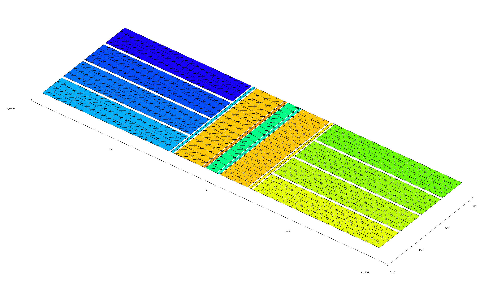
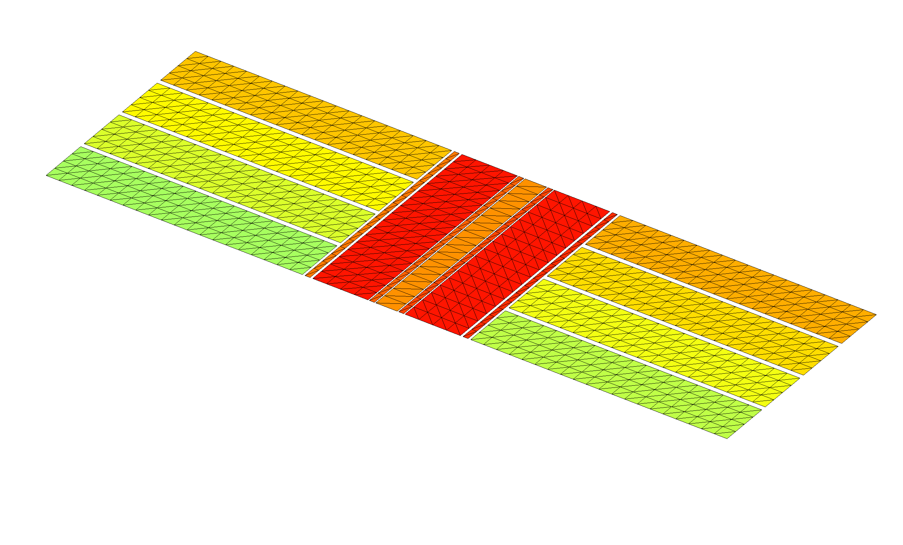
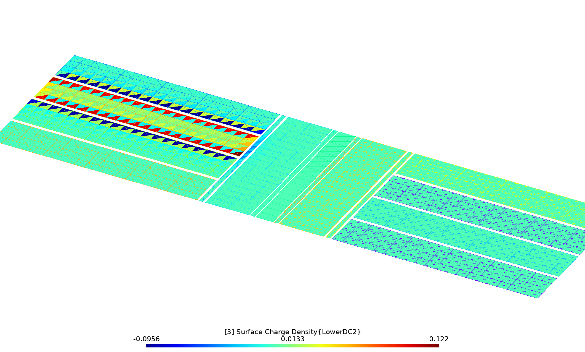

Electrostatic fields of an electrode array
In this example we use scuff-static to compute the electrostatic fields in the vicinity of a complicated electrode array with the various electrodes held at various external potentials.
More specifically, the calculation will proceed in two stages:
-
First, for each of the N electrodes in the device we will compute the fields produced by maintaining that electrode at a potential of 1 volt, with all other electrodes grounded. This will produce N separate datasets, each reporting the electrostatic potential and E-field components at our desired evaluation points. The structure of the boundary-element-method (BEM) solver implemented by scuff-static ensures that this calculation is fast, even for large N: once we have assembled and factorized the BEM matrix for a given geometry, we can solve any number of electrostatic problems involving different excitations of that geometry essentially "for free."
-
Then we will run a second calculation in which all electrodes are maintained at specific voltages and---in addition---an externally-sourced electrostatic field is present. For this case we will generate graphic visualization files illustrating the fields in the vicinity of the device.
The geometry considered in this example is a model of a Paul trap; I am grateful to Anton Grounds for suggesting this application and for providing the sophisticated parameterized gmsh file describing the geometry.
The files for this example may be found in the
share/scuff-em/examples/PaulTrap subdirectory
of your scuff-em installation.
gmsh geometry and mesh files
The gmsh
geometry file Trap.geo describes
a collection of conductor surfaces constituting a Paul trap.
This file contains a user-specifiable parameter ELCNT
that may be used to set the number of electrodes; to create
a mesh for a 8-electrode geometry, we say
% gmsh -2 -setnumber ELCNT 4 Trap.geo -o Trap_4.msh
(Note that the total number of electrodes is twice the value
specified for ELCNT).
This produces the gmsh mesh file Trap_4.msh, which we can
open in gmsh to visualize:
% gmsh Trap_4.msh

Simple scuff-em geometry file
The gmsh file Trap.geo is designed to ensure that
each separate metallic strip in the geometry---including
each of the 8 identically-shaped electrodes, plus each of
the 7 strips of varying thicknesses running down the center
of the structure---is meshed as a separate
entity and assigned a unique (integer) identifier. Thus, one way to
write a scuff-em geometry file
for this geometry would be simply to include each of the 15
distinct surfaces in OBJECT...ENDOBJECT clauses, each clause
referencing a unique entity in the mesh. This strategy
is pursued by the file Trap_4.scuffgeo,
which looks like this:
OBJECT GND
MESHFILE Trap_4.msh
MESHTAG 1
ENDOBJECT
OBJECT Rot2
MESHFILE Trap_4.msh
MESHTAG 2
ENDOBJECT
OBJECT Rot3
MESHFILE Trap_4.msh
MESHTAG 3
ENDOBJECT
OBJECT RF
MESHFILE Trap_4.msh
MESHTAG 4
ENDOBJECT
OBJECT Rot1
MESHFILE Trap_4.msh
MESHTAG 5
ENDOBJECT
OBJECT Rot4
MESHFILE Trap_4.msh
MESHTAG 6
ENDOBJECT
OBJECT UpperDC1
MESHFILE Trap_4.msh
MESHTAG 7
ENDOBJECT
OBJECT LowerDC1
MESHFILE Trap_4.msh
MESHTAG 8
ENDOBJECT
OBJECT UpperDC2
MESHFILE Trap_4.msh
MESHTAG 9
ENDOBJECT
OBJECT LowerDC2
MESHFILE Trap_4.msh
MESHTAG 10
ENDOBJECT
OBJECT UpperDC3
MESHFILE Trap_4.msh
MESHTAG 11
ENDOBJECT
OBJECT LowerDC3
MESHFILE Trap_4.msh
MESHTAG 12
ENDOBJECT
OBJECT UpperDC4
MESHFILE Trap_4.msh
MESHTAG 13
ENDOBJECT
OBJECT LowerDC4
MESHFILE Trap_4.msh
MESHTAG 14
ENDOBJECT
Note that, although each of the OBJECT clauses references
the same mesh file, the different values of the MESHTAG
field select distinct entities within that file, so that each
of the 15 OBJECTs are treated by scuff-em as
distinct identities.
(The values of the MESHTAG identifiers are defined
in .geo files by gmsh's Physical Surface construct;
see Trap.geo for an example).`
Improved scuff-em geometry file
The file Trap_4.scuffgeo above defines a perfectly workable
scuff-em geometry, and running calculations with this
file will yield results identical to those obtained below.
However, the strategy pursued by Trap_4.scuffgeo is not
the optimal way to define this geometry to scuff-em,
because it ignores significant potential for computational
cost savings afforded by the structure of the geometry.
Indeed, as we see from the image above, the geometry
here contains many copies of identical shapes that
are simply rotated and/or translated with respect to one
another in space. For geometries of this sort, it
is best not to define separate mesh entities for each
of the various identical copies of structures, but rather
to inform scuff-em of the redundancies that are present
so that the code can make maximal reuse of computations
carried out for identical structures.
More specifically, we will modify the above file as follows:
-
Instead of defining each of the 8 electrodes to be a separate entity in the mesh, we will reference just one of the electrode rectangles in the mesh file, together with
DISPLACEDstatements indicating how identical copies of that entity are to be translated in space to define the 8 electrodes in the positions shown above. -
Similarly, instead of defining separate meshed entities for each of the long runners in the center of the geometry, we will take advantage of the 180 rotational symmetry by referencing only one copy of each distinct shape together with
ROTATEDstatements indicating how identical copies of that shape are to be rotated in space to define the desired configuration of the runners.
As a result, scuff-em will need to read and store only
5 distinct entities from the mesh file, together with
instructions for displacements and rotations. This is a major
reduction in complexity from the 15 distinct mesh structures
involved in the simple .scuffgeo file above. (The primary
computational efficiency here is that identical mesh
structures--independent of displacement or rotation---contribute
identical diagonal blocks to the BEM system matrix; if
scuff-em knows that an object in a geometry has 7 identical
mates, then it need only compute the corresponding matrix
block once instead of 8 times, yielding huge cost reductions.
scuff-static also detects and exploits redundancies in off-diagonal
matrix blocks.)
The file that implements this improved strategy is Trap_4_Improved.scuffgeo,
and it looks like this:
OBJECT UpperDC1
MESHFILE Trap_4.msh
MESHTAG 7
ENDOBJECT
OBJECT LowerDC1
MESHFILE Trap_4.msh
MESHTAG 7
DISPLACED 0 -1656 0
ENDOBJECT
OBJECT UpperDC2
MESHFILE Trap_4.msh
MESHTAG 7
DISPLACED 220 0 0
ENDOBJECT
OBJECT LowerDC2
MESHFILE Trap_4.msh
MESHTAG 7
DISPLACED 0 -1656 0
DISPLACED 220 0 0
ENDOBJECT
OBJECT UpperDC3
MESHFILE Trap_4.msh
MESHTAG 7
DISPLACED 440 0 0
ENDOBJECT
OBJECT LowerDC3
MESHFILE Trap_4.msh
MESHTAG 7
DISPLACED 0 -1656 0
DISPLACED 440 0 0
ENDOBJECT
OBJECT UpperDC4
MESHFILE Trap_4.msh
MESHTAG 7
DISPLACED 660 0 0
ENDOBJECT
OBJECT LowerDC4
MESHFILE Trap_4.msh
MESHTAG 7
DISPLACED 0 -1656 0
DISPLACED 660 0 0
ENDOBJECT
OBJECT GND
MESHFILE Trap_4.msh
MESHTAG 1
ENDOBJECT
OBJECT Rot1
MESHFILE Trap_4.msh
MESHTAG 5
ENDOBJECT
OBJECT Rot2
MESHFILE Trap_4.msh
MESHTAG 2
ENDOBJECT
OBJECT Rot3
MESHFILE Trap_4.msh
MESHTAG 2
ROTATED 180 ABOUT 0 0 1
ENDOBJECT
OBJECT Rot4
MESHFILE Trap_4.msh
MESHTAG 5
ROTATED 180 ABOUT 0 0 1
ENDOBJECT
OBJECT RF
MESHFILE Trap_4.msh
MESHTAG 4
ENDOBJECT
As anticipated above, note that this file references
only 5 distinct MESHTAG values instead of the 15 distinct
values referenced by the original Trap_4.scuffgeo file.
Visually confirming the geometry description
Before proceeding, we should certainly pause to check
that the geometry defined by the improved geometry file
does indeed look like what we want. We do this by
running the scuff-analyze utility
with the --WriteGMSHFiles command-line option:
% scuff-analyze --geometry Trap_4_Improved.scuffgeo --WriteGMSHFiles
This produces a file named Trap_4_Improved.pp, which we open
in gmsh for visual confirmation:
% gmsh Trap_4_Improved.pp

Phase 1 calculation: Computing fields of individual conductors
The first phase of our calculation will be to determine the electrostatic field configurations produced by holding each of the individual electrodes at a potential of 1 V with all other electrodes grounded. This will yield 8 distinct field configurations, which we can sample at an arbitrary set of evaluation points or visualize in graphical form; the electrostatic field obtained by driving all conductors with arbitrary specified voltages will be a weighted linear combination of these 8 configurations, so we can use the elemental fields to optimize a set of electrode voltages to yield a given field profile (phase 2, below).
Running multiple calculations at once: The excitation file
One obvious way to do this calculation would be to run scuff-static
8 times, each time using the --PotFile
command-line option to define a different set of conductor potentials.
However, such an approach would be inefficient given the structure of the boundary-element method (BEM) implemented by scuff-static. In BEM solvers, almost all of the computational cost goes into assembling and factorizing the system matrix, which knows only about the geometry itself and is independent of any excitation that may furnish the stimulus in an electrostatics problem (such as externally-sourced fields or sets of prescribed conductor potentials). Thus, in cases where we wish to consider the response of a geometry to multiple stimuli, it is efficient to do the calculations all at once; having paid the cost of forming and factorizing the system matrix, we can solve electrostatics problems for any number of distinct stimuli essentially for free.
To allow this efficiency to be exploited in command-line calculations,
scuff-static allows users to specify an
excitation file
describing one or more stimuli to be applied to the geometry
sequentially. For the purposes of our first calculation,
the excitation file will specify 8 separate stimuli, each
consisting of a choice of one conductor to be held at
a potential of 1.0 V (by default, any conductors not
specified are maintained at 0 V). This file is called
Phase1.Excitations:
EXCITATION UpperDC1
UpperDC1 1.0
ENDEXCITATION
EXCITATION LowerDC1
LowerDC1 1.0
ENDEXCITATION
EXCITATION UpperDC2
UpperDC2 1.0
ENDEXCITATION
EXCITATION LowerDC2
LowerDC2 1.0
ENDEXCITATION
EXCITATION UpperDC3
UpperDC3 1.0
ENDEXCITATION
EXCITATION LowerDC3
LowerDC3 1.0
ENDEXCITATION
EXCITATION UpperDC4
UpperDC4 1.0
ENDEXCITATION
EXCITATION LowerDC4
LowerDC4 1.0
ENDEXCITATION
This file is passed to scuff-em via
the --ExcitationFile command-line option.
Notice that each EXCITATION is labeled by an arbitrary user-defined
tag, which will be used to identify the output produced under that
excitation.
Speaking of outputs, we will want to tell scuff-static what we'd like it to compute for each excitation. In this case I'll ask for two types of output:
-
numerical values of the electrostatic potential and field at a set of evaluation points I choose; I will choose a line of points lying slightly above the structure and running down the center conductor. I put the coordinates of these points into a text file called
MyEPFileand say--EPFile MyEPFileon the scuff-static command line. -
graphical visualization files showing the distribution of surface charge induced on the geometry by each exciting stimulus. (See below for a different type of graphical visualization output.) To request this I use the
--PlotFileoption to specify the visualization output file name (here I call itMyPlotFile.pp).
Here's a script (Phase1.RunScript)
that runs the phase-1 calculation:
#!/bin/bash ARGS="" ARGS="${ARGS} --geometry Trap_4_Improved.scuffgeo" ARGS="${ARGS} --ExcitationFile Phase1.Excitations" ARGS="${ARGS} --EPFile MyEPFile" ARGS="${ARGS} --PlotFile MyPlotFile.pp" scuff-static ${ARGS}
This script takes about 3 seconds to run on my laptop. When it's finished, you have two new output files:
-
Trap_4_Improved.MyEPFile.outis a text data file reporting values of the electrostatic potential and field components at each evaluation point inMyEPFilefor each excitation. -
MyPlotFile.ppis a gmsh visualization file plotting the induced charge density for each of the 8 excitations. For example, here's what it looks like when the electrode namedLowerDC2is driven:

Phase 2 calculation: External sources and field visualization
Having determined the fields produced by each electrode in isolation, in practice we would now presumably do some sort of design calculation to identify the optimal voltages at which to drive each electrode for our desired application. As a follow-up calculation, we'll now do a run in which (a) each conductor is set to a nonzero voltage, (b) additional external field sources are present, (c) we wish to visualize the electrostatic fields over a region of space.
Items (a) and (b) are handled by writing an excitation
file (Phase2.Excitations) that specifies,
in addition to prescribed conductor potentials, several
external field sources that are also present in the geometry:
a point monopole, a point dipole, a constant electric field, and
an arbitrary user-specified function.
(Needless to say, this contrived assortment of sources is intended
primarily to illustrate the types of external-field sources
that may be specified in excitation files).
EXCITATION KitchenSink # conductor potentials UpperDC1 0.5 LowerDC1 -0.7 UpperDC2 -0.3 LowerDC2 0.5 UpperDC3 0.2 LowerDC3 -0.4 UpperDC4 -0.6 LowerDC4 1.0 # point charge at X=(-400,1000,250) with charge -300 monopole -400.0 1000.0 250.0 -300 # z-directed point dipole at X=(-300,-1000,-400) dipole -300.0 -1000.0 -400.0 0.0 0.0 10000.0 # small constant background field in Z-direction constant_field 0 0 1.0e-4 # arbitrary user-specified function of x, y, z, r, Rho, Theta, Phi phi 1.0e-8*Rho*Rho*cos(2.0*Phi) ENDEXCITATION
Item (c) is handled by using gmsh to define a field-visualization
mesh---in essence, a screen on which we want an image of the electrostatic
field configuration, although it need not be planar---together with a
set of geometrical transformations specifying how the screen
is to be replicated throughout space to yield quasi-3D visual information on the
field configuration. In this case, the mesh is described by
the simple gmsh geometry file Screen.geo,
which we turn into Screen.msh by running gmsh -2 Screen.geo.
Then, the transformation file Screen.trans
specifies three geometrical transformations in which the screen
is rotated and displaced to define the three walls of the diorama
shown in the figure below.
The script that runs the calculation is Phase2.RunScript:
#!/bin/bash ARGS="" ARGS="${ARGS} --geometry Trap_4_Improved.scuffgeo" ARGS="${ARGS} --ExcitationFile Phase2.Excitations" ARGS="${ARGS} --FVMesh Screen.msh" ARGS="${ARGS} --FVMeshTransFile Screen.trans" scuff-static ${ARGS}
This produces several files with extension .pp; we open them
all simultaneously in gmsh together with the original geometry
mesh to get some graphical insight into the spatial variation of the
fields in our problem.
% gmsh Trap_4*.pp Trap_4.msh
Click the image below for higher resolution:
{kind=link}